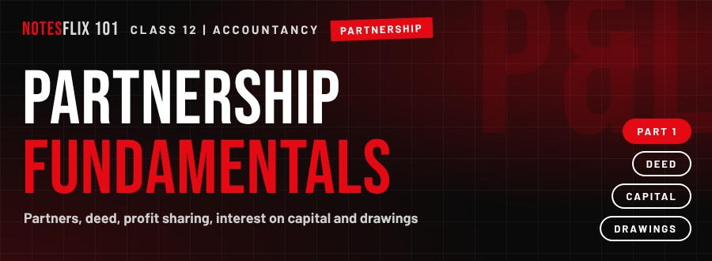
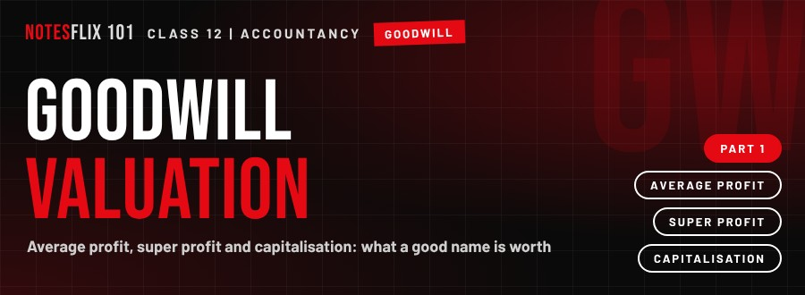
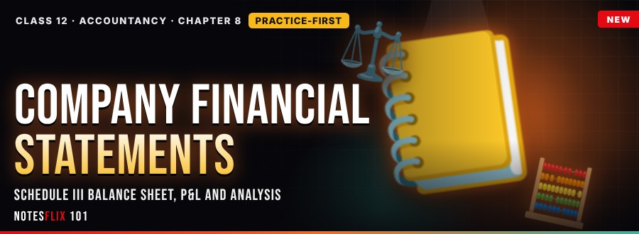
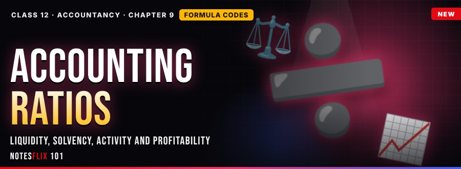

Class 12 Accountancy Notes
Interactive CBSE Class 12 Accountancy notes from Notesflix 101. They follow the CBSE syllabus and NCERT textbook for Class 12. Each chapter is broken into short parts with easy explanations, picture stories, flash cards, quizzes and board-style exam questions with model answers. 1 of 14 parts are free to read with no password. The other parts open with a password from Notesflix 101.
Chapters

Chapter 1: Partnership Fundamentals
What a partnership is, how profits are shared, and how the appropriation account works.
- Partnership Fundamentals — Part 1FREE — Definition, features, the partnership deed, and interest on capital, drawings and loans. (30 min)
- Partnership Fundamentals — Part 2PASSWORD — When profit is not enough: how interest, salary and shares are paid out when there is little profit to share. (35 min)
- Partnership Fundamentals — Part 3PASSWORD — Fixing last year's mistakes: past adjustments shared among the partners. (35 min)
- Partnership Fundamentals — Part 4PASSWORD — A promise of minimum profit: how a guaranteed profit is met and who bears any shortfall. (35 min)

Chapter 2: Goodwill
What a good name is worth: average profit, super profit and capitalisation methods.
- Goodwill — Part 1PASSWORD — What goodwill is, and how its value is worked out from average profit. (30 min)
- Goodwill — Part 2PASSWORD — Who pays for the good name: goodwill when partners change their profit-sharing ratio or a partner joins. (30 min)

Chapter 8: Financial Statements of a Company and Their Analysis
Schedule III Balance Sheet and P&L, comparative and common-size statements, practised the board way.
- Company Balance Sheet — Part 1PASSWORD — Schedule III Balance Sheet, practice-first: classify items, build the Share Capital and Reserves notes, and prepare a full board-style Balance Sheet. (35 min)
- Statement of Profit and Loss — Part 2PASSWORD — Schedule III Statement of P&L: revenue vs other income, the seven expense heads, cost of materials consumed, changes in inventories and a full board question. (30 min)
- Comparative Statements — Part 3PASSWORD — Analysis of financial statements: objectives, tools, limitations, and building comparative statements of P&L and Balance Sheet. (30 min)
- Common-size Statements — Part 4PASSWORD — Common-size Statement of P&L and Balance Sheet, reading the results, and comparative vs common-size. (30 min)

Chapter 9: Accounting Ratios
All 18 ratios from one company, with formula codes, ratio labs and board drills.
- Liquidity Ratios — Part 1PASSWORD — Meaning and types of ratios, current and quick ratio, ratio lab and effect of transactions. (30 min)
- Solvency Ratios — Part 2PASSWORD — Debt-equity, debt to capital employed, total assets to debt, proprietary and interest coverage, with a debt-equity lab. (30 min)
- Activity Ratios — Part 3PASSWORD — Inventory, trade receivables and payables turnover, collection and payment periods, working capital, fixed and net asset turnover. (30 min)
- Profitability Ratios — Part 4PASSWORD — Gross profit, operating, operating profit, net profit and return on investment, plus the full ratio report card. (30 min)
Frequently asked questions
Are the Class 12 Accountancy notes free?
1 of 14 parts are free to read with no password. The other parts open with a password from Notesflix 101.
Which syllabus do these Class 12 Accountancy notes follow?
They follow the CBSE syllabus and NCERT textbook for Class 12. Every chapter is split into short interactive parts with simple explanations, flash cards, quizzes and board-style exam questions with model answers.
How many chapters are covered?
4 chapters: Partnership Fundamentals; Goodwill; Financial Statements of a Company and Their Analysis; Accounting Ratios.
Is there a practice test for Class 12 Accountancy?
Yes. The Class 12 Accountancy Practice Marathon has 130 multiple-choice questions taken from the notes: a weekly marathon (30 questions, 20 minutes, the same set for everyone that week), a 10-question sprint, a 100-question mega marathon and chapter practice. A free sample is open to all; the full bank opens with the subject password.
How do I get the password for locked notes?
Email support@notesflix101.com with your name, class, school and the Gmail ID you sign in with. The same password opens every locked Accountancy note.